Spoke V2 · aluminium winding
Summary
Aluminium can replace the copper winding of the Spoke V2 motor without touching the rotor structure. The best result needs the stator OD at 167 mm. At the copper OD of 160 mm it costs either range or peak-point efficiency.
OD 167 mm · Q1 · 63 mm stack
7.24 kg
0.52 kg lighter than copper, $61.0 material (+$9.4). Torque at 2000 rpm, 360 A equals copper (FEMM 45.87 vs 45.73 N·m). Loss at 9339 rpm, 3.24 N·m: 483 W vs 682 W. Range +0.5 % (telematics) / +0.3 % (WMTC Class 1). Efficiency at 2000 rpm, 44 N·m: −2.4 points.
OD 165 mm · Q4 · 70 mm stack
7.87 kg
+0.11 kg, $66.2. Range +0.2 % / +0.1 %. OP3 −1.2 points. At 63 mm the OD 165 stator falls just short of the torque-speed limit (0.984 against 0.985).
OD 160 mm · R1 · 70 mm stack
7.36 kg
0.40 kg lighter, $62.5. Range −0.1 % / −0.3 %. OP3 −2.2 points. Matching copper at OP3 needs 81 mm (R3, 8.27 kg, $72.5) and costs 0.5–0.7 % range.
What every option shares
- Rotor near the shaft unchanged: shaft 25 mm, webs 1.0 mm at 4.0 mm offset, magnet depth 28 mm. The near-air-gap change (magnet inset 2.0 → 1.5 mm, opening 8.5 → 8.0 mm) lowers the centrifugal load on the webs by 0.12 %.
- 0.20 mm electrical steel. With M235-35A, aluminium designs still meet the torque and OP1/OP2 loss limits and cost about $16–20 less than copper, but lose 1.3–2.2 % range.
- Ripple: the rotor change cuts OP2 ripple from 87 % to about 20 %. Getting every operating point below 10 % needs a 3° three-step rotor skew (copper needs it as well). THD is 4.5–4.6 % without skew.
- Demagnetisation: with magnets at −20 °C and full 360 A on the −d axis, 1.1–1.3 % of the magnet area falls below 0.1 T, against 0.9–1.0 % for copper. Designs with 8–9 turns per coil see 10–20 % less field at 360 A.
- Current density at 360 A: 10.5–13.6 A/mm² (copper 15.2, limit 16).
| Design | Stack mm | Turns/coil | Strands × mm | Wire fill | R per path mΩ (hot) | Mass kg | Cost $ | T 2000 rpm ratio | Envelope min | Eff OP1 % | Eff OP2 % | Eff OP3 % | OP2 loss W | OP3 loss W | Wh/km tele | Wh/km WMTC |
|---|---|---|---|---|---|---|---|---|---|---|---|---|---|---|---|---|
| Copper today | 63.0 | 10 | 1 × 2.946 | 0.518 | 13.35 | 7.76 | 51.6 | 1.000 | 1.000 | 90.71 | 82.39 | 90.03 | 682 | 1028 | 61.47 | 60.91 |
| OD160 R1 70 mm | 70.0 | 9 | 2 × 2.240 | 0.511 | 18.42 | 7.36 | 62.5 | 1.015 | 0.989 | 92.69 | 85.01 | 87.85 | 559 | 1285 | 61.51 | 61.07 |
| OD160 R3 81 mm | 81.0 | 8 | 3 × 2.053 | 0.510 | 14.31 | 8.27 | 72.5 | 1.020 | 1.001 | 93.18 | 84.02 | 90.10 | 606 | 1020 | 61.77 | 61.36 |
| OD165 Q4 70 mm | 70.0 | 9 | 2 × 2.360 | 0.508 | 16.65 | 7.87 | 66.2 | 1.022 | 0.995 | 92.85 | 85.27 | 88.87 | 551 | 1163 | 61.32 | 60.85 |
| OD167 Q1 63 mm | 63.0 | 10 | 4 × 1.626 | 0.517 | 18.26 | 7.24 | 61.0 | 1.000 | 0.987 | 92.88 | 86.84 | 87.67 | 483 | 1306 | 61.15 | 60.76 |
| OD167 Q2 70 mm | 70.0 | 9 | 4 × 1.700 | 0.514 | 16.04 | 8.04 | 67.6 | 1.023 | 0.999 | 93.30 | 86.51 | 89.30 | 500 | 1113 | 61.22 | 60.79 |
Model results (tuned FEMM-based model, winding at its hot temperature, magnets 100 °C). Efficiencies are this model's values; Motor-CAD gives copper 90.71 / 82.39 / 90.03 % at OP1 / OP2 / OP3.
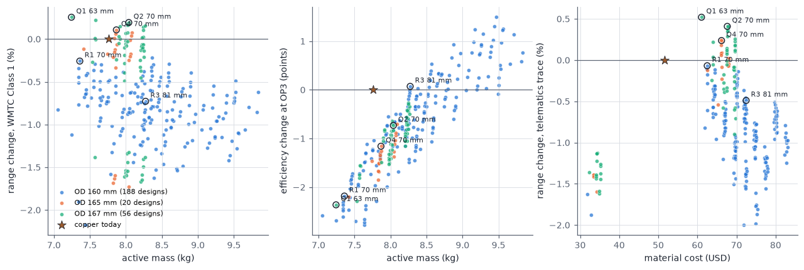
Spoke V2 · aluminium winding
What was simulated
The study chains FEMM 4.2 finite-element solutions into a tuned motor model, then into vehicle drive cycles. Every number in this report comes from one of the stages below.
| Stage | Tool / script | What it computes | Count |
|---|---|---|---|
| 1. Geometry grids | alu_femm.py (FEMM) | Torque, d/q flux, stator iron-loss indices, winding-zone field, tooth and yoke flux density on a 4 × 4 id/iq grid at two rotor angles, per stator/rotor geometry | 17 geometries × 32 = 544 solves |
| 2. Winding design sweep | alu_study.py + alu_sweep.py | Each geometry × stack 63–99 mm × 10/9/8/7 turns per coil × 1–4 strands (largest wire at copper's fill) × steel grade: efficiency map, torque-speed limit, OP1/OP2/OP3, masses | 2,592 designs (phase 2) + 1,756 (phase 1) |
| 3. Drive cycle and cost | alu_v2_eval.py (tele_range method) | Wh/km on the telematics speed trace and WMTC Class 1, current density at 360 A, material cost | 406 designs scored |
| 4. FEMM verification | sens.py ALU mode + alu_verify.py | Peak torque vs current angle, back-EMF THD (15-point no-load waveform), torque ripple at OP1/OP2/OP3 (12 positions each), OP2 field snapshot, rotor skew | 6 geometries × 61 solves |
| 5. Flux and demagnetisation maps | alu_maps.py + alu_maps_render.py | No-load and peak-point flux maps; cold demagnetisation on the −d axis and at the peak point, two rotor angles | 17 geometries × 7 = 119 solves |
| 6. Structural screen | rotor_struct.py | Centrifugal load carried by the shaft-side webs (Σ ρ·A·r of pole steel and magnet outside the web root) | 5 rotor variants |
Model chain and scaling
The tuned model (lab_model.py, v2 losses) reproduces the Motor-CAD copper design: torque 45.73 N·m at 360 A in FEMM, THD 5.31 % (Motor-CAD 5.42 %). An aluminium design is evaluated at the baseline-equivalent current i₀ = s·i, with s = Nph / 20 and kL = L / 63: torque = kL·T₀(i₀), flux = s·kL·ψ₀(i₀), iron loss = kL·P₀(i₀). Each geometry adds its FEMM difference to the copper geometry at the same ampere-turns. Winding resistance uses ρ at the hot winding temperature, the turn length 2L + end turn (end turn corrected for tooth width and for the mean coil thickness, π·Δt), and the Motor-CAD hybrid AC-loss formula with the strand diameter.
Hard limits used to accept a design
| Limit | Value | Source |
|---|---|---|
| Stator OD | ≤ 167 mm (165 preferred) | User |
| Rotor near the shaft | Unchanged: shaft 25, web 1.0 mm, offset 4.0 mm, magnet depth 28 mm | User (structural) |
| Torque at 2000 rpm, 360 A | ≥ copper | User objective |
| Torque-speed limit | ≥ 98.5 % of copper at every speed | Study rule |
| Losses OP1 (9000 rpm, max power) and OP2 (9339 rpm, 3.24 N·m) | ≤ copper; OP2 minimised | User objective |
| Current density at 360 A | < 16 A/mm² | User |
| THD | < 5 % | User |
| Torque ripple | < 10 % at every point | User |
| Drive cycle | Wh/km close to copper | User |
Geometries
| Stator | OD | Slot depth | Tooth | Slot opening | Tip depth | Magnet inset | Magnet opening | Slot area mm² | Stator steel kg (63 mm) | EM torque N·m | vs copper geometry | Tooth B 99 % | Yoke B 99 % | No-load iron index |
|---|---|---|---|---|---|---|---|---|---|---|---|---|---|---|
| S0 | 160 | 17.5 | 15.5 | 5.0 | 0.8 | 2.0 | 8.5 | 279 | 3.61 | 47.76 | +0.0 | 2.24 | 1.59 | 1.00 |
| S1 | 160 | 18.5 | 15.5 | 5.0 | 0.8 | 2.0 | 8.5 | 301 | 3.49 | 47.13 | −1.3 | 2.24 | 1.70 | 1.07 |
| S2 | 160 | 19.5 | 15.5 | 5.0 | 0.8 | 2.0 | 8.5 | 323 | 3.36 | 45.36 | −5.0 | 2.22 | 1.77 | 1.15 |
| S3 | 160 | 19.5 | 14.5 | 5.0 | 0.8 | 2.0 | 8.5 | 340 | 3.27 | 44.95 | −5.9 | 2.20 | 1.76 | 1.21 |
| S4 | 160 | 20.5 | 14.5 | 5.0 | 0.8 | 2.0 | 8.5 | 364 | 3.13 | 41.57 | −13.0 | 2.20 | 1.80 | 1.31 |
| P1 | 165 | 20.0 | 15.5 | 5.0 | 0.8 | 2.0 | 8.5 | 334 | 3.89 | 47.50 | −0.6 | 2.23 | 1.60 | 1.08 |
| P2 | 167 | 21.0 | 15.5 | 5.0 | 0.8 | 2.0 | 8.5 | 358 | 4.01 | 47.38 | −0.8 | 2.23 | 1.60 | 1.11 |
| P3 | 167 | 22.0 | 15.5 | 5.0 | 0.8 | 2.0 | 8.5 | 381 | 3.87 | 46.70 | −2.2 | 2.23 | 1.70 | 1.19 |
| P4 | 167 | 22.0 | 14.5 | 5.0 | 0.8 | 2.0 | 8.5 | 400 | 3.77 | 45.85 | −4.0 | 2.21 | 1.68 | 1.25 |
| Q1 | 167 | 21.0 | 15.5 | 4.0 | 0.8 | 1.5 | 8.0 | 356 | 4.02 | 47.79 | +0.1 | 2.18 | 1.61 | 1.14 |
| Q2 | 167 | 21.0 | 15.5 | 4.0 | 1.2 | 1.5 | 8.0 | 350 | 4.04 | 47.81 | +0.1 | 2.15 | 1.63 | 1.12 |
| Q3 | 167 | 21.0 | 15.5 | 5.0 | 0.8 | 1.5 | 8.0 | 358 | 4.01 | 47.63 | −0.3 | 2.20 | 1.59 | 1.14 |
| Q4 | 165 | 20.0 | 15.5 | 4.0 | 0.8 | 1.5 | 8.0 | 332 | 3.91 | 47.90 | +0.3 | 2.19 | 1.60 | 1.10 |
| R1 | 160 | 18.5 | 15.5 | 4.0 | 0.8 | 1.5 | 8.0 | 299 | 3.50 | 47.51 | −0.5 | 2.18 | 1.71 | 1.09 |
| R2 | 160 | 19.5 | 15.5 | 4.0 | 0.8 | 1.5 | 8.0 | 321 | 3.38 | 45.66 | −4.4 | 2.18 | 1.77 | 1.17 |
| R3 | 160 | 19.5 | 14.5 | 4.0 | 0.8 | 1.5 | 8.0 | 337 | 3.28 | 45.24 | −5.3 | 2.17 | 1.76 | 1.23 |
| R0 | 160 | 17.5 | 15.5 | 4.0 | 0.8 | 1.5 | 8.0 | 277 | 3.62 | 48.17 | +0.9 | 2.20 | 1.60 | 1.02 |
FEMM, 63 mm, same ampere-turns as the copper winding at 360 A rms (path peak id −49 A, iq 147 A). Lengths in mm. Iron index = stator Σ mass·B^α at no load relative to the copper stator (hysteresis-weighted), a proxy for the no-load iron loss.
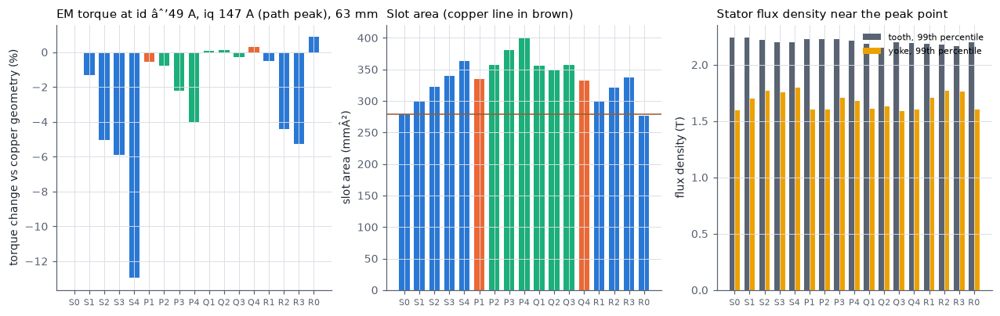
Spoke V2 · aluminium winding
Copper baseline
The reference is the Motor-CAD design: stator OD 160 mm, bore 107 mm, slot 17.5 mm deep, tooth 15.5 mm, slot opening 5.0 mm, 63 mm stack, delta winding with 2 parallel paths and 10 turns per coil of SWG 11 copper, M235-35A steel, 52 V, 360 A rms.
| Motor-CAD input: Copper today | Value |
|---|---|
| Stator outer diameter | 160.0 mm |
| Stator bore | 107.0 mm |
| Slot depth | 17.5 mm |
| Tooth width | 15.5 mm |
| Slot opening | 5.0 mm |
| Tooth tip depth | 0.8 mm |
| Tooth tip angle | 20° |
| Slot corner radius | 1.95 mm |
| Rotor diameter | 106.0 mm |
| Shaft diameter | 25.0 mm (unchanged) |
| Magnet depth | 28.0 mm (unchanged) |
| Bridge thickness / offset | 1.0 / 4.0 mm (unchanged) |
| Magnet inset | 2.0 mm |
| Magnet opening | 8.5 mm |
| Magnet X / Y / Z | 18.0 / 10.5 / 6.0 mm (unchanged) |
| Stack length (stator and rotor) | 63.0 mm |
| Steel | M235-35A |
| Winding | Delta, 2 parallel paths, 12 coils (unchanged layout) |
| Turns per coil | 10 |
| Conductor | Copper, 1 strands in hand × 2.946 mm bare |
| Wire slot fill (insulated) | 0.518 |
| Mean turn length | 201.6 mm |
| Design | Point | Shaft torque N·m | Line current A rms | Winding DC W | Winding AC W | Iron W | Mechanical W | Total W | Efficiency % |
|---|---|---|---|---|---|---|---|---|---|
| Copper today | OP1 | 14.01 | 235.8 | 371 | 501 | 332 | 149 | 1353 | 90.71 |
| OP2 | 3.26 | 126.0 | 106 | 159 | 260 | 156 | 682 | 82.39 | |
| OP3 | 44.34 | 360.0 | 865 | 55 | 87 | 21 | 1028 | 90.03 |
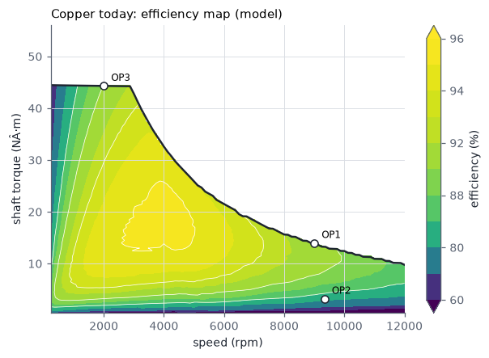
Motor-CAD values for reference: OP1 90.71 %, OP2 82.39 %, OP3 90.03 %, peak efficiency 95.31 %, active mass 7.76 kg, material cost $51.57 at the assumed prices.
Spoke V2 · aluminium winding
OD 160 mm
Same OD as copper. The slot can only grow inward toward a thinner yoke, so aluminium needs a longer stack to keep peak torque and efficiency. 188 designs meet the hard limits.
Stator and rotor geometries at OD 160
| Stator | OD | Slot depth | Tooth | Slot opening | Tip depth | Magnet inset | Magnet opening | Slot area mm² | Stator steel kg (63 mm) | EM torque N·m | vs copper geometry | Tooth B 99 % | Yoke B 99 % | No-load iron index |
|---|---|---|---|---|---|---|---|---|---|---|---|---|---|---|
| S0 | 160 | 17.5 | 15.5 | 5.0 | 0.8 | 2.0 | 8.5 | 279 | 3.61 | 47.76 | +0.0 | 2.24 | 1.59 | 1.00 |
| S1 | 160 | 18.5 | 15.5 | 5.0 | 0.8 | 2.0 | 8.5 | 301 | 3.49 | 47.13 | −1.3 | 2.24 | 1.70 | 1.07 |
| S2 | 160 | 19.5 | 15.5 | 5.0 | 0.8 | 2.0 | 8.5 | 323 | 3.36 | 45.36 | −5.0 | 2.22 | 1.77 | 1.15 |
| S3 | 160 | 19.5 | 14.5 | 5.0 | 0.8 | 2.0 | 8.5 | 340 | 3.27 | 44.95 | −5.9 | 2.20 | 1.76 | 1.21 |
| S4 | 160 | 20.5 | 14.5 | 5.0 | 0.8 | 2.0 | 8.5 | 364 | 3.13 | 41.57 | −13.0 | 2.20 | 1.80 | 1.31 |
| R0 | 160 | 17.5 | 15.5 | 4.0 | 0.8 | 1.5 | 8.0 | 277 | 3.62 | 48.17 | +0.9 | 2.20 | 1.60 | 1.02 |
| R1 | 160 | 18.5 | 15.5 | 4.0 | 0.8 | 1.5 | 8.0 | 299 | 3.50 | 47.51 | −0.5 | 2.18 | 1.71 | 1.09 |
| R2 | 160 | 19.5 | 15.5 | 4.0 | 0.8 | 1.5 | 8.0 | 321 | 3.38 | 45.66 | −4.4 | 2.18 | 1.77 | 1.17 |
| R3 | 160 | 19.5 | 14.5 | 4.0 | 0.8 | 1.5 | 8.0 | 337 | 3.28 | 45.24 | −5.3 | 2.17 | 1.76 | 1.23 |
FEMM, 63 mm, same ampere-turns as the copper winding at 360 A rms (path peak id −49 A, iq 147 A). Lengths in mm. Iron index = stator Σ mass·B^α at no load relative to the copper stator (hysteresis-weighted), a proxy for the no-load iron loss.
S1–S4 keep the copper rotor and slot tip. R0–R3 add the near-air-gap rotor change (inset 1.5, opening 8.0) and a 4.0 mm slot opening. Deeper slots cost torque per ampere-turn because the thinner yoke saturates: S2–S4 lose 5–13 % and R2–R3 lose 4–5 % against the copper geometry (yoke B 99 % rises from 1.59 T to 1.76–1.80 T). The rotor change adds 0.7–0.9 % on each stator.
Best designs at OD 160
| Design (stator, stack, turns/phase, strands) | Stack mm | Turns/coil | Steel | Mass kg | Cost $ | T 2000 rpm ratio | Envelope min | ΔEff OP1 | ΔEff OP2 | ΔEff OP3 | OP2 loss W | J A/mm² | Range tele % | Range WMTC % |
|---|---|---|---|---|---|---|---|---|---|---|---|---|---|---|
| R0 L78.8 N16 4x1.60 NO20 | 78.8 | 8 | NO20 | 8.36 | 69.9 | 1.043 | 0.998 | +2.53 | +2.12 | −0.94 | 582 | 12.9 | −0.18 | −0.22 |
| R1 L70.0 N18 2x2.24 NO20 | 70.0 | 9 | NO20 | 7.36 | 62.5 | 1.015 | 0.989 | +1.98 | +2.63 | −2.18 | 559 | 13.2 | −0.07 | −0.26 |
| R1 L72.0 N18 2x2.24 NO20 | 72.0 | 9 | NO20 | 7.56 | 64.3 | 1.044 | 0.989 | +1.81 | +2.24 | −1.72 | 581 | 13.2 | −0.31 | −0.29 |
| R0 L81.0 N16 4x1.60 NO20 | 81.0 | 8 | NO20 | 8.59 | 71.9 | 1.073 | 1.000 | +2.41 | +1.67 | −0.57 | 605 | 12.9 | −0.36 | −0.29 |
| R0 L78.8 N16 1x3.26 NO20 | 78.8 | 8 | NO20 | 8.38 | 70.1 | 1.043 | 0.996 | +1.24 | +0.25 | −0.80 | 667 | 12.4 | −0.45 | −0.30 |
| R0 L72.0 N18 4x1.50 NO20 | 72.0 | 9 | NO20 | 7.65 | 64.0 | 1.057 | 0.987 | +2.11 | +2.62 | −2.38 | 563 | 14.7 | −0.35 | −0.30 |
| R0 L78.8 N16 3x1.83 NO20 | 78.8 | 8 | NO20 | 8.35 | 69.9 | 1.043 | 0.996 | +2.37 | +1.86 | −1.14 | 593 | 13.2 | −0.32 | −0.32 |
| R1 L70.0 N18 3x1.80 NO20 | 70.0 | 9 | NO20 | 7.34 | 62.4 | 1.015 | 0.988 | +2.17 | +2.96 | −2.44 | 545 | 13.6 | −0.10 | −0.34 |
| R1 L72.0 N18 3x1.80 NO20 | 72.0 | 9 | NO20 | 7.55 | 64.2 | 1.044 | 0.989 | +2.05 | +2.60 | −1.97 | 565 | 13.6 | −0.38 | −0.37 |
| R0 L78.8 N16 2x2.24 NO20 | 78.8 | 8 | NO20 | 8.35 | 69.9 | 1.043 | 0.996 | +1.98 | +1.47 | −1.18 | 611 | 13.2 | −0.41 | −0.37 |
| R0 L72.0 N18 2x2.12 NO20 | 72.0 | 9 | NO20 | 7.65 | 64.0 | 1.057 | 0.987 | +1.68 | +2.07 | −2.45 | 587 | 14.7 | −0.48 | −0.37 |
| R1 L78.8 N16 2x2.36 NO20 | 78.8 | 8 | NO20 | 8.25 | 70.1 | 1.031 | 0.997 | +2.20 | +1.59 | −0.61 | 607 | 11.9 | −0.26 | −0.38 |
| R0 L75.0 N18 4x1.50 NO20 | 75.0 | 9 | NO20 | 7.96 | 66.6 | 1.101 | 0.986 | +1.90 | +1.95 | −1.73 | 591 | 14.7 | −0.73 | −0.38 |
| R0 L81.0 N16 3x1.83 NO20 | 81.0 | 8 | NO20 | 8.58 | 71.9 | 1.073 | 0.991 | +2.13 | +1.39 | −0.76 | 617 | 13.2 | −0.50 | −0.39 |
Designs that meet the hard limits (torque at 2000 rpm ≥ copper, torque-speed limit ≥ 98.5 % of copper, OP1 and OP2 efficiency ≥ copper), sorted by WMTC Class 1 range. Copper today: 7.76 kg, $51.6, OP2 loss 682 W, J 15.2 A/mm².
| Design | Stack mm | Turns/coil | Strands × mm | Wire fill | R per path mΩ (hot) | Mass kg | Cost $ | T 2000 rpm ratio | Envelope min | Eff OP1 % | Eff OP2 % | Eff OP3 % | OP2 loss W | OP3 loss W | Wh/km tele | Wh/km WMTC |
|---|---|---|---|---|---|---|---|---|---|---|---|---|---|---|---|---|
| Copper today | 63.0 | 10 | 1 × 2.946 | 0.518 | 13.35 | 7.76 | 51.6 | 1.000 | 1.000 | 90.71 | 82.39 | 90.03 | 682 | 1028 | 61.47 | 60.91 |
| OD160 R1 70 mm | 70.0 | 9 | 2 × 2.240 | 0.511 | 18.42 | 7.36 | 62.5 | 1.015 | 0.989 | 92.69 | 85.01 | 87.85 | 559 | 1285 | 61.51 | 61.07 |
| OD160 R3 81 mm | 81.0 | 8 | 3 × 2.053 | 0.510 | 14.31 | 8.27 | 72.5 | 1.020 | 1.001 | 93.18 | 84.02 | 90.10 | 606 | 1020 | 61.77 | 61.36 |
Model results (tuned FEMM-based model, winding at its hot temperature, magnets 100 °C). Efficiencies are this model's values; Motor-CAD gives copper 90.71 / 82.39 / 90.03 % at OP1 / OP2 / OP3.
| Design | Point | Shaft torque N·m | Line current A rms | Winding DC W | Winding AC W | Iron W | Mechanical W | Total W | Efficiency % |
|---|---|---|---|---|---|---|---|---|---|
| OD160 R1 70 mm | OP1 | 14.32 | 238.5 | 524 | 159 | 228 | 154 | 1065 | 92.69 |
| OP2 | 3.24 | 132.3 | 161 | 53 | 184 | 161 | 559 | 85.01 | |
| OP3 | 44.34 | 354.6 | 1158 | 16 | 88 | 22 | 1285 | 87.85 | |
| OD160 R3 81 mm | OP1 | 14.39 | 246.6 | 435 | 127 | 269 | 162 | 993 | 93.18 |
| OP2 | 3.26 | 150.3 | 162 | 51 | 224 | 170 | 606 | 84.02 | |
| OP3 | 44.34 | 352.8 | 891 | 12 | 94 | 23 | 1020 | 90.10 |
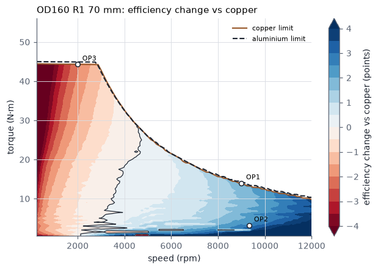
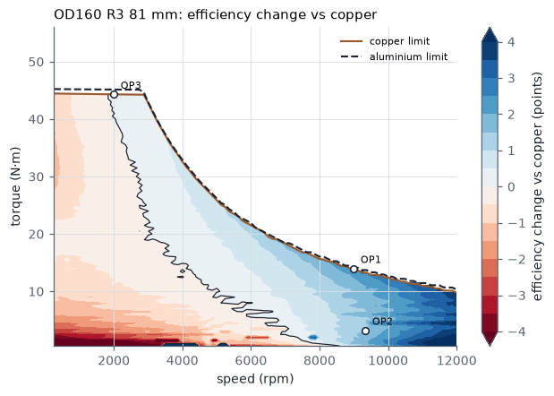
| Motor-CAD input: OD160 R1 70 mm | Value |
|---|---|
| Stator outer diameter | 160.0 mm |
| Stator bore | 107.0 mm |
| Slot depth | 18.5 mm |
| Tooth width | 15.5 mm |
| Slot opening | 4.0 mm |
| Tooth tip depth | 0.8 mm |
| Tooth tip angle | 20° |
| Slot corner radius | 1.95 mm |
| Rotor diameter | 106.0 mm |
| Shaft diameter | 25.0 mm (unchanged) |
| Magnet depth | 28.0 mm (unchanged) |
| Bridge thickness / offset | 1.0 / 4.0 mm (unchanged) |
| Magnet inset | 1.5 mm |
| Magnet opening | 8.0 mm |
| Magnet X / Y / Z | 18.0 / 10.5 / 6.0 mm (unchanged) |
| Stack length (stator and rotor) | 70.0 mm |
| Steel | NO20 |
| Winding | Delta, 2 parallel paths, 12 coils (unchanged layout) |
| Turns per coil | 9 |
| Conductor | Aluminium EC-1350 (61 % IACS), 2 strands in hand × 2.240 mm bare |
| Wire slot fill (insulated) | 0.511 |
| Mean turn length | 215.9 mm |
| Motor-CAD input: OD160 R3 81 mm | Value |
|---|---|
| Stator outer diameter | 160.0 mm |
| Stator bore | 107.0 mm |
| Slot depth | 19.5 mm |
| Tooth width | 14.5 mm |
| Slot opening | 4.0 mm |
| Tooth tip depth | 0.8 mm |
| Tooth tip angle | 20° |
| Slot corner radius | 1.95 mm |
| Rotor diameter | 106.0 mm |
| Shaft diameter | 25.0 mm (unchanged) |
| Magnet depth | 28.0 mm (unchanged) |
| Bridge thickness / offset | 1.0 / 4.0 mm (unchanged) |
| Magnet inset | 1.5 mm |
| Magnet opening | 8.0 mm |
| Magnet X / Y / Z | 18.0 / 10.5 / 6.0 mm (unchanged) |
| Stack length (stator and rotor) | 81.0 mm |
| Steel | NO20 |
| Winding | Delta, 2 parallel paths, 12 coils (unchanged layout) |
| Turns per coil | 8 |
| Conductor | Aluminium EC-1350 (61 % IACS), 3 strands in hand × 2.053 mm bare |
| Wire slot fill (insulated) | 0.510 |
| Mean turn length | 237.7 mm |
Ripple, THD and demagnetisation at OD 160
| Geometry | T at 360 A N·m | Best γ °el | THD % | Ripple OP1 % | Ripple OP2 % | Ripple OP3 % | THD 3° skew | OP1 3° skew | OP2 3° skew | OP3 3° skew | Torque factor |
|---|---|---|---|---|---|---|---|---|---|---|---|
| Copper geometry (S0) | 45.73 | 19.0 | 5.31 | 16.1 | 86.7 | 5.1 | 3.86 | 11.4 | 54.5 | 3.9 | 0.997 |
| R0 OD160 | 46.20 | 19.6 | 4.55 | 14.6 | 20.9 | 5.4 | 3.64 | 7.9 | 3.6 | 3.4 | 0.997 |
| R1 OD160 | 45.63 | 20.1 | 4.50 | 14.5 | 20.3 | 5.6 | 3.60 | 7.8 | 3.4 | 3.6 | 0.997 |
FEMM at 63 mm with the copper path currents (10 turns/coil). Ripple is peak-to-peak / mean over one 12° slot pitch. 3° skew = three axial rotor segments stepped 0 / 1.5 / 3° mechanical. Limits: THD < 5 %, ripple < 10 %.
| Geometry | −d axis: B at 1 % of magnet area (T) | −d axis: area below 0.1 T (%) | −d axis: area below 0 T (%) | −d axis: most negative H (kA/m) | Peak point: B at 1 % area (T) | Peak point: area below 0.1 T (%) |
|---|---|---|---|---|---|---|
| S0 | 0.103 | 0.97 | 0.23 | −717 | 0.120 | 0.80 |
| S1 | 0.102 | 0.98 | 0.23 | −717 | 0.120 | 0.80 |
| S2 | 0.102 | 0.97 | 0.22 | −713 | 0.120 | 0.79 |
| S3 | 0.103 | 0.94 | 0.21 | −712 | 0.121 | 0.78 |
| S4 | 0.102 | 0.97 | 0.22 | −712 | 0.121 | 0.77 |
| R0 | 0.087 | 1.26 | 0.31 | −811 | 0.106 | 0.92 |
| R1 | 0.087 | 1.25 | 0.31 | −810 | 0.108 | 0.92 |
| R2 | 0.088 | 1.25 | 0.32 | −811 | 0.110 | 0.90 |
| R3 | 0.088 | 1.24 | 0.32 | −808 | 0.109 | 0.90 |
Magnets at −20 °C (Br 0.427 T), 360 A rms with the copper ampere-turns (10 turns/coil). Worst of rotor positions 0° and 3°. Most negative H sits in single corner elements and is mesh-dependent; compare designs on the area measures.
Flux maps, OD 160
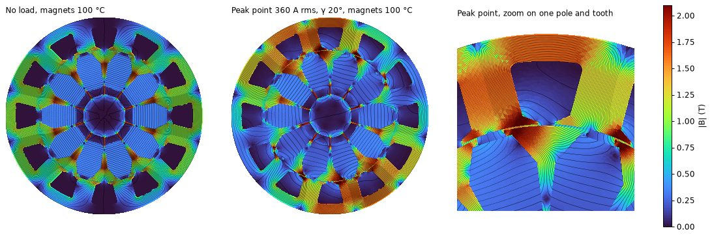
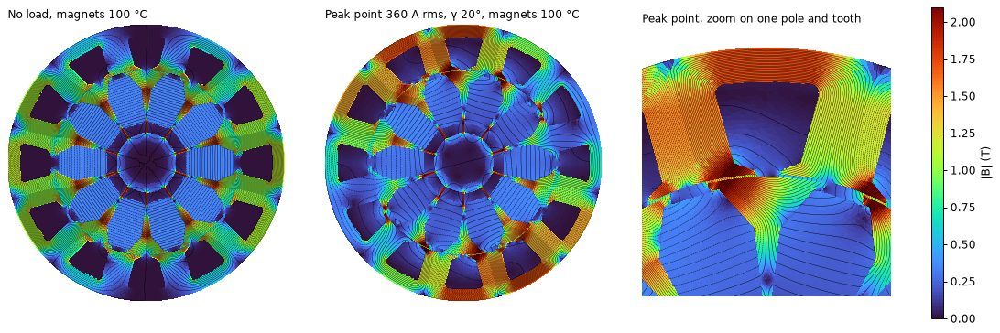
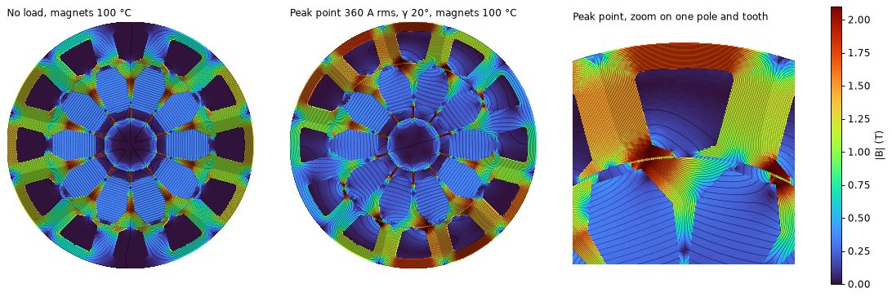
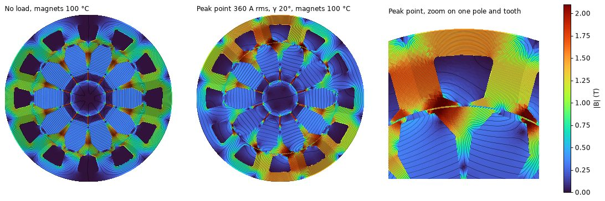
Spoke V2 · aluminium winding
OD 165 mm
A 165 mm OD adds 2.5 mm of radial room, used for a 20 mm slot with the copper tooth and a 9 mm yoke. 20 designs meet the hard limits; all need a 66–72 mm stack.
| Stator | OD | Slot depth | Tooth | Slot opening | Tip depth | Magnet inset | Magnet opening | Slot area mm² | Stator steel kg (63 mm) | EM torque N·m | vs copper geometry | Tooth B 99 % | Yoke B 99 % | No-load iron index |
|---|---|---|---|---|---|---|---|---|---|---|---|---|---|---|
| P1 | 165 | 20.0 | 15.5 | 5.0 | 0.8 | 2.0 | 8.5 | 334 | 3.89 | 47.50 | −0.6 | 2.23 | 1.60 | 1.08 |
| Q4 | 165 | 20.0 | 15.5 | 4.0 | 0.8 | 1.5 | 8.0 | 332 | 3.91 | 47.90 | +0.3 | 2.19 | 1.60 | 1.10 |
FEMM, 63 mm, same ampere-turns as the copper winding at 360 A rms (path peak id −49 A, iq 147 A). Lengths in mm. Iron index = stator Σ mass·B^α at no load relative to the copper stator (hysteresis-weighted), a proxy for the no-load iron loss.
P1 keeps the copper rotor and tip; Q4 adds the rotor change and 4.0 mm slot opening. At 63 mm and 10 turns per coil, Q4 reaches 98.4 % of copper's torque-speed limit around 3000 rpm, just under the 98.5 % rule, so the 63 mm option is excluded. Its other results at 63 mm (2 × 2.24 mm strands, 0.20 mm steel): 7.10 kg, $59.7, OP2 +3.7 points, OP3 −2.9 points, range +0.2 % / +0.1 %.
Best designs at OD 165
| Design (stator, stack, turns/phase, strands) | Stack mm | Turns/coil | Steel | Mass kg | Cost $ | T 2000 rpm ratio | Envelope min | ΔEff OP1 | ΔEff OP2 | ΔEff OP3 | OP2 loss W | J A/mm² | Range tele % | Range WMTC % |
|---|---|---|---|---|---|---|---|---|---|---|---|---|---|---|
| Q4 L70.0 N18 2x2.36 NO20 | 70.0 | 9 | NO20 | 7.87 | 66.2 | 1.022 | 0.995 | +2.15 | +2.88 | −1.16 | 551 | 11.9 | +0.24 | +0.11 |
| Q4 L72.0 N18 2x2.36 NO20 | 72.0 | 9 | NO20 | 8.09 | 68.0 | 1.051 | 0.989 | +1.98 | +2.48 | −0.71 | 569 | 11.9 | +0.01 | +0.08 |
| Q4 L70.0 N18 3x1.90 NO20 | 70.0 | 9 | NO20 | 7.85 | 66.1 | 1.022 | 0.995 | +2.46 | +3.30 | −1.35 | 533 | 12.2 | +0.24 | +0.06 |
| Q4 L72.0 N18 3x1.90 NO20 | 72.0 | 9 | NO20 | 8.07 | 67.9 | 1.051 | 0.995 | +2.35 | +2.93 | −0.89 | 549 | 12.2 | +0.02 | +0.04 |
| Q4 L70.0 N18 4x1.63 NO20 | 70.0 | 9 | NO20 | 7.84 | 66.0 | 1.022 | 0.994 | +2.54 | +3.48 | −1.51 | 525 | 12.5 | +0.18 | +0.01 |
| Q4 L72.0 N18 4x1.63 NO20 | 72.0 | 9 | NO20 | 8.06 | 67.9 | 1.051 | 0.995 | +2.42 | +3.12 | −1.04 | 541 | 12.5 | −0.01 | −0.01 |
| Q4 L70.0 N18 1x3.35 NO20 | 70.0 | 9 | NO20 | 7.87 | 66.2 | 1.022 | 0.985 | +1.00 | +1.50 | −1.26 | 613 | 11.8 | −0.08 | −0.06 |
| P1 L66.0 N20 3x1.83 NO20 | 66.0 | 10 | NO20 | 7.41 | 62.4 | 1.043 | 0.986 | +1.80 | +3.29 | −2.19 | 535 | 13.2 | −0.12 | −0.11 |
| P1 L70.0 N18 2x2.36 NO20 | 70.0 | 9 | NO20 | 7.85 | 66.2 | 1.012 | 0.994 | +2.16 | +2.47 | −1.31 | 565 | 11.9 | +0.09 | −0.12 |
| P1 L70.0 N18 3x1.90 NO20 | 70.0 | 9 | NO20 | 7.84 | 66.1 | 1.012 | 0.993 | +2.52 | +2.95 | −1.50 | 544 | 12.2 | +0.09 | −0.15 |
| P1 L72.0 N18 2x2.36 NO20 | 72.0 | 9 | NO20 | 8.07 | 68.0 | 1.041 | 0.990 | +1.91 | +2.08 | −0.93 | 586 | 11.9 | −0.07 | −0.17 |
| P1 L69.0 N20 3x1.83 NO20 | 69.0 | 10 | NO20 | 7.74 | 65.2 | 1.091 | 0.985 | +1.67 | +2.57 | −1.47 | 563 | 13.2 | −0.54 | −0.17 |
| P1 L72.0 N18 3x1.90 NO20 | 72.0 | 9 | NO20 | 8.05 | 67.9 | 1.041 | 0.990 | +2.29 | +2.59 | −1.11 | 564 | 12.2 | −0.04 | −0.20 |
| P1 L70.0 N18 4x1.63 NO20 | 70.0 | 9 | NO20 | 7.82 | 66.0 | 1.012 | 0.992 | +2.60 | +3.16 | −1.67 | 536 | 12.5 | +0.06 | −0.21 |
Designs that meet the hard limits (torque at 2000 rpm ≥ copper, torque-speed limit ≥ 98.5 % of copper, OP1 and OP2 efficiency ≥ copper), sorted by WMTC Class 1 range. Copper today: 7.76 kg, $51.6, OP2 loss 682 W, J 15.2 A/mm².
| Design | Stack mm | Turns/coil | Strands × mm | Wire fill | R per path mΩ (hot) | Mass kg | Cost $ | T 2000 rpm ratio | Envelope min | Eff OP1 % | Eff OP2 % | Eff OP3 % | OP2 loss W | OP3 loss W | Wh/km tele | Wh/km WMTC |
|---|---|---|---|---|---|---|---|---|---|---|---|---|---|---|---|---|
| Copper today | 63.0 | 10 | 1 × 2.946 | 0.518 | 13.35 | 7.76 | 51.6 | 1.000 | 1.000 | 90.71 | 82.39 | 90.03 | 682 | 1028 | 61.47 | 60.91 |
| OD165 Q4 70 mm | 70.0 | 9 | 2 × 2.360 | 0.508 | 16.65 | 7.87 | 66.2 | 1.022 | 0.995 | 92.85 | 85.27 | 88.87 | 551 | 1163 | 61.32 | 60.85 |
Model results (tuned FEMM-based model, winding at its hot temperature, magnets 100 °C). Efficiencies are this model's values; Motor-CAD gives copper 90.71 / 82.39 / 90.03 % at OP1 / OP2 / OP3.
| Design | Point | Shaft torque N·m | Line current A rms | Winding DC W | Winding AC W | Iron W | Mechanical W | Total W | Efficiency % |
|---|---|---|---|---|---|---|---|---|---|
| OD165 Q4 70 mm | OP1 | 14.33 | 237.6 | 470 | 186 | 230 | 154 | 1039 | 92.85 |
| OP2 | 3.26 | 131.4 | 144 | 61 | 185 | 161 | 551 | 85.27 | |
| OP3 | 44.34 | 351.9 | 1031 | 19 | 91 | 22 | 1163 | 88.87 |
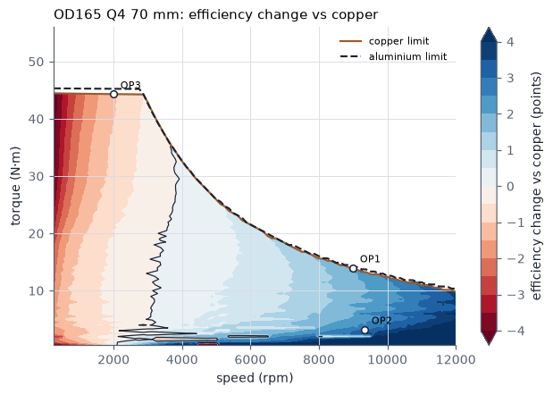
| Motor-CAD input: OD165 Q4 70 mm | Value |
|---|---|
| Stator outer diameter | 165.0 mm |
| Stator bore | 107.0 mm |
| Slot depth | 20.0 mm |
| Tooth width | 15.5 mm |
| Slot opening | 4.0 mm |
| Tooth tip depth | 0.8 mm |
| Tooth tip angle | 20° |
| Slot corner radius | 1.95 mm |
| Rotor diameter | 106.0 mm |
| Shaft diameter | 25.0 mm (unchanged) |
| Magnet depth | 28.0 mm (unchanged) |
| Bridge thickness / offset | 1.0 / 4.0 mm (unchanged) |
| Magnet inset | 1.5 mm |
| Magnet opening | 8.0 mm |
| Magnet X / Y / Z | 18.0 / 10.5 / 6.0 mm (unchanged) |
| Stack length (stator and rotor) | 70.0 mm |
| Steel | NO20 |
| Winding | Delta, 2 parallel paths, 12 coils (unchanged layout) |
| Turns per coil | 9 |
| Conductor | Aluminium EC-1350 (61 % IACS), 2 strands in hand × 2.360 mm bare |
| Wire slot fill (insulated) | 0.508 |
| Mean turn length | 216.5 mm |
Demagnetisation and flux maps, OD 165
| Geometry | −d axis: B at 1 % of magnet area (T) | −d axis: area below 0.1 T (%) | −d axis: area below 0 T (%) | −d axis: most negative H (kA/m) | Peak point: B at 1 % area (T) | Peak point: area below 0.1 T (%) |
|---|---|---|---|---|---|---|
| S0 | 0.103 | 0.97 | 0.23 | −717 | 0.120 | 0.80 |
| P1 | 0.103 | 0.95 | 0.23 | −713 | 0.119 | 0.80 |
| Q4 | 0.088 | 1.23 | 0.32 | −811 | 0.107 | 0.92 |
Magnets at −20 °C (Br 0.427 T), 360 A rms with the copper ampere-turns (10 turns/coil). Worst of rotor positions 0° and 3°. Most negative H sits in single corner elements and is mesh-dependent; compare designs on the area measures.
No separate THD and ripple FEMM run was made for P1 and Q4. Q4 has the same rotor and slot tip as Q1 and R1, which gave THD 4.50–4.55 % and ripple 14.4–14.5 / 20.1–20.3 / 5.6 % without skew.
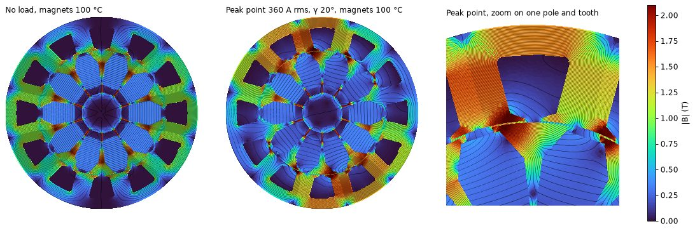
Spoke V2 · aluminium winding
OD 167 mm
The 167 mm OD gives a 21 mm slot (357 mm², 28 % more than copper) with the copper tooth width and a 9 mm yoke. That is enough for aluminium at the copper stack length of 63 mm. 56 designs meet the hard limits.
| Stator | OD | Slot depth | Tooth | Slot opening | Tip depth | Magnet inset | Magnet opening | Slot area mm² | Stator steel kg (63 mm) | EM torque N·m | vs copper geometry | Tooth B 99 % | Yoke B 99 % | No-load iron index |
|---|---|---|---|---|---|---|---|---|---|---|---|---|---|---|
| P2 | 167 | 21.0 | 15.5 | 5.0 | 0.8 | 2.0 | 8.5 | 358 | 4.01 | 47.38 | −0.8 | 2.23 | 1.60 | 1.11 |
| P3 | 167 | 22.0 | 15.5 | 5.0 | 0.8 | 2.0 | 8.5 | 381 | 3.87 | 46.70 | −2.2 | 2.23 | 1.70 | 1.19 |
| P4 | 167 | 22.0 | 14.5 | 5.0 | 0.8 | 2.0 | 8.5 | 400 | 3.77 | 45.85 | −4.0 | 2.21 | 1.68 | 1.25 |
| Q1 | 167 | 21.0 | 15.5 | 4.0 | 0.8 | 1.5 | 8.0 | 356 | 4.02 | 47.79 | +0.1 | 2.18 | 1.61 | 1.14 |
| Q2 | 167 | 21.0 | 15.5 | 4.0 | 1.2 | 1.5 | 8.0 | 350 | 4.04 | 47.81 | +0.1 | 2.15 | 1.63 | 1.12 |
| Q3 | 167 | 21.0 | 15.5 | 5.0 | 0.8 | 1.5 | 8.0 | 358 | 4.01 | 47.63 | −0.3 | 2.20 | 1.59 | 1.14 |
FEMM, 63 mm, same ampere-turns as the copper winding at 360 A rms (path peak id −49 A, iq 147 A). Lengths in mm. Iron index = stator Σ mass·B^α at no load relative to the copper stator (hysteresis-weighted), a proxy for the no-load iron loss.
P3 and P4 push the slot to 22 mm with an 8 mm yoke; the yoke saturates and no design on them meets the limits. Q1 adds the rotor change and 4.0 mm slot opening to P2, Q2 also deepens the tooth tip to 1.2 mm, and Q3 has the rotor change only.
Best designs at OD 167
| Design (stator, stack, turns/phase, strands) | Stack mm | Turns/coil | Steel | Mass kg | Cost $ | T 2000 rpm ratio | Envelope min | ΔEff OP1 | ΔEff OP2 | ΔEff OP3 | OP2 loss W | J A/mm² | Range tele % | Range WMTC % |
|---|---|---|---|---|---|---|---|---|---|---|---|---|---|---|
| Q1 L63.0 N20 4x1.63 NO20 | 63.0 | 10 | NO20 | 7.24 | 61.0 | 1.000 | 0.987 | +2.18 | +4.45 | −2.36 | 483 | 12.5 | +0.52 | +0.26 |
| Q1 L66.0 N20 4x1.63 NO20 | 66.0 | 10 | NO20 | 7.58 | 63.9 | 1.048 | 0.986 | +2.04 | +3.87 | −1.55 | 510 | 12.5 | +0.22 | +0.23 |
| Q2 L70.0 N18 4x1.70 NO20 | 70.0 | 9 | NO20 | 8.04 | 67.6 | 1.023 | 0.999 | +2.60 | +4.12 | −0.73 | 500 | 11.4 | +0.41 | +0.19 |
| Q1 L70.0 N18 4x1.70 NO20 | 70.0 | 9 | NO20 | 8.02 | 67.6 | 1.020 | 0.998 | +2.75 | +3.70 | −0.85 | 518 | 11.4 | +0.38 | +0.18 |
| Q3 L70.0 N18 3x2.00 NO20 | 70.0 | 9 | NO20 | 8.02 | 67.8 | 1.014 | 0.999 | +2.65 | +2.79 | −0.64 | 552 | 11.0 | +0.41 | +0.16 |
| Q2 L72.0 N18 4x1.70 NO20 | 72.0 | 9 | NO20 | 8.26 | 69.5 | 1.052 | 0.994 | +2.62 | +3.70 | −0.34 | 514 | 11.4 | +0.26 | +0.16 |
| Q1 L69.0 N20 4x1.63 NO20 | 69.0 | 10 | NO20 | 7.91 | 66.7 | 1.096 | 0.985 | +1.88 | +3.26 | −0.85 | 536 | 12.5 | −0.17 | +0.15 |
| Q1 L72.0 N18 4x1.70 NO20 | 72.0 | 9 | NO20 | 8.24 | 69.5 | 1.049 | 0.995 | +2.64 | +3.25 | −0.43 | 535 | 11.4 | +0.23 | +0.14 |
| Q3 L72.0 N18 3x2.00 NO20 | 72.0 | 9 | NO20 | 8.24 | 69.7 | 1.043 | 0.996 | +2.54 | +2.42 | −0.29 | 571 | 11.0 | +0.19 | +0.10 |
| P2 L70.0 N18 3x2.00 NO20 | 70.0 | 9 | NO20 | 8.02 | 67.8 | 1.009 | 0.998 | +2.60 | +3.14 | −0.71 | 538 | 11.0 | +0.36 | +0.08 |
| Q3 L70.0 N18 4x1.70 NO20 | 70.0 | 9 | NO20 | 8.00 | 67.6 | 1.014 | 0.998 | +2.76 | +3.04 | −0.92 | 541 | 11.4 | +0.35 | +0.07 |
| Q3 L69.0 N20 4x1.63 NO20 | 69.0 | 10 | NO20 | 7.90 | 66.7 | 1.092 | 0.987 | +2.03 | +2.67 | −0.98 | 559 | 12.5 | −0.28 | +0.03 |
| P2 L72.0 N18 3x2.00 NO20 | 72.0 | 9 | NO20 | 8.24 | 69.7 | 1.038 | 1.000 | +2.51 | +2.80 | −0.39 | 557 | 11.0 | +0.17 | +0.03 |
| Q3 L72.0 N18 4x1.70 NO20 | 72.0 | 9 | NO20 | 8.22 | 69.5 | 1.043 | 0.996 | +2.65 | +2.68 | −0.56 | 560 | 11.4 | +0.12 | +0.01 |
Designs that meet the hard limits (torque at 2000 rpm ≥ copper, torque-speed limit ≥ 98.5 % of copper, OP1 and OP2 efficiency ≥ copper), sorted by WMTC Class 1 range. Copper today: 7.76 kg, $51.6, OP2 loss 682 W, J 15.2 A/mm².
| Design | Stack mm | Turns/coil | Strands × mm | Wire fill | R per path mΩ (hot) | Mass kg | Cost $ | T 2000 rpm ratio | Envelope min | Eff OP1 % | Eff OP2 % | Eff OP3 % | OP2 loss W | OP3 loss W | Wh/km tele | Wh/km WMTC |
|---|---|---|---|---|---|---|---|---|---|---|---|---|---|---|---|---|
| Copper today | 63.0 | 10 | 1 × 2.946 | 0.518 | 13.35 | 7.76 | 51.6 | 1.000 | 1.000 | 90.71 | 82.39 | 90.03 | 682 | 1028 | 61.47 | 60.91 |
| OD167 Q1 63 mm | 63.0 | 10 | 4 × 1.626 | 0.517 | 18.26 | 7.24 | 61.0 | 1.000 | 0.987 | 92.88 | 86.84 | 87.67 | 483 | 1306 | 61.15 | 60.76 |
| OD167 Q2 70 mm | 70.0 | 9 | 4 × 1.700 | 0.514 | 16.04 | 8.04 | 67.6 | 1.023 | 0.999 | 93.30 | 86.51 | 89.30 | 500 | 1113 | 61.22 | 60.79 |
Model results (tuned FEMM-based model, winding at its hot temperature, magnets 100 °C). Efficiencies are this model's values; Motor-CAD gives copper 90.71 / 82.39 / 90.03 % at OP1 / OP2 / OP3.
| Design | Point | Shaft torque N·m | Line current A rms | Winding DC W | Winding AC W | Iron W | Mechanical W | Total W | Efficiency % |
|---|---|---|---|---|---|---|---|---|---|
| OD167 Q1 63 mm | OP1 | 14.34 | 247.5 | 559 | 108 | 219 | 149 | 1036 | 92.88 |
| OP2 | 3.26 | 118.8 | 129 | 27 | 171 | 156 | 483 | 86.84 | |
| OP3 | 44.34 | 360.0 | 1183 | 11 | 91 | 21 | 1306 | 87.67 | |
| OD167 Q2 70 mm | OP1 | 14.41 | 243.9 | 477 | 99 | 245 | 154 | 975 | 93.30 |
| OP2 | 3.28 | 124.2 | 124 | 26 | 188 | 161 | 500 | 86.51 | |
| OP3 | 44.34 | 351.0 | 988 | 10 | 93 | 22 | 1113 | 89.30 |
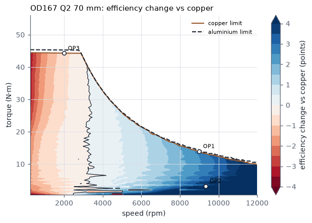
| Motor-CAD input: OD167 Q1 63 mm | Value |
|---|---|
| Stator outer diameter | 167.0 mm |
| Stator bore | 107.0 mm |
| Slot depth | 21.0 mm |
| Tooth width | 15.5 mm |
| Slot opening | 4.0 mm |
| Tooth tip depth | 0.8 mm |
| Tooth tip angle | 20° |
| Slot corner radius | 1.95 mm |
| Rotor diameter | 106.0 mm |
| Shaft diameter | 25.0 mm (unchanged) |
| Magnet depth | 28.0 mm (unchanged) |
| Bridge thickness / offset | 1.0 / 4.0 mm (unchanged) |
| Magnet inset | 1.5 mm |
| Magnet opening | 8.0 mm |
| Magnet X / Y / Z | 18.0 / 10.5 / 6.0 mm (unchanged) |
| Stack length (stator and rotor) | 63.0 mm |
| Steel | NO20 |
| Winding | Delta, 2 parallel paths, 12 coils (unchanged layout) |
| Turns per coil | 10 |
| Conductor | Aluminium EC-1350 (61 % IACS), 4 strands in hand × 1.626 mm bare |
| Wire slot fill (insulated) | 0.517 |
| Mean turn length | 202.9 mm |
| Motor-CAD input: OD167 Q2 70 mm | Value |
|---|---|
| Stator outer diameter | 167.0 mm |
| Stator bore | 107.0 mm |
| Slot depth | 21.0 mm |
| Tooth width | 15.5 mm |
| Slot opening | 4.0 mm |
| Tooth tip depth | 1.2 mm |
| Tooth tip angle | 20° |
| Slot corner radius | 1.95 mm |
| Rotor diameter | 106.0 mm |
| Shaft diameter | 25.0 mm (unchanged) |
| Magnet depth | 28.0 mm (unchanged) |
| Bridge thickness / offset | 1.0 / 4.0 mm (unchanged) |
| Magnet inset | 1.5 mm |
| Magnet opening | 8.0 mm |
| Magnet X / Y / Z | 18.0 / 10.5 / 6.0 mm (unchanged) |
| Stack length (stator and rotor) | 70.0 mm |
| Steel | NO20 |
| Winding | Delta, 2 parallel paths, 12 coils (unchanged layout) |
| Turns per coil | 9 |
| Conductor | Aluminium EC-1350 (61 % IACS), 4 strands in hand × 1.700 mm bare |
| Wire slot fill (insulated) | 0.514 |
| Mean turn length | 216.5 mm |
Ripple, THD and demagnetisation at OD 167
| Geometry | T at 360 A N·m | Best γ °el | THD % | Ripple OP1 % | Ripple OP2 % | Ripple OP3 % | THD 3° skew | OP1 3° skew | OP2 3° skew | OP3 3° skew | Torque factor |
|---|---|---|---|---|---|---|---|---|---|---|---|
| Copper geometry (S0) | 45.73 | 19.0 | 5.31 | 16.1 | 86.7 | 5.1 | 3.86 | 11.4 | 54.5 | 3.9 | 0.997 |
| Q1 OD167 | 45.87 | 19.9 | 4.55 | 14.4 | 20.1 | 5.6 | 3.65 | 7.7 | 3.2 | 3.5 | 0.997 |
| Q2 OD167 | 46.01 | 20.4 | 4.57 | 15.7 | 21.2 | 6.7 | 3.71 | 8.2 | 3.3 | 4.3 | 0.997 |
FEMM at 63 mm with the copper path currents (10 turns/coil). Ripple is peak-to-peak / mean over one 12° slot pitch. 3° skew = three axial rotor segments stepped 0 / 1.5 / 3° mechanical. Limits: THD < 5 %, ripple < 10 %.
| Geometry | −d axis: B at 1 % of magnet area (T) | −d axis: area below 0.1 T (%) | −d axis: area below 0 T (%) | −d axis: most negative H (kA/m) | Peak point: B at 1 % area (T) | Peak point: area below 0.1 T (%) |
|---|---|---|---|---|---|---|
| S0 | 0.103 | 0.97 | 0.23 | −717 | 0.120 | 0.80 |
| P2 | 0.103 | 0.95 | 0.23 | −713 | 0.118 | 0.80 |
| P3 | 0.104 | 0.96 | 0.23 | −715 | 0.119 | 0.79 |
| P4 | 0.104 | 0.94 | 0.23 | −711 | 0.120 | 0.78 |
| Q1 | 0.087 | 1.20 | 0.32 | −811 | 0.108 | 0.89 |
| Q2 | 0.085 | 1.27 | 0.36 | −829 | 0.109 | 0.88 |
| Q3 | 0.087 | 1.24 | 0.30 | −824 | 0.105 | 0.90 |
Magnets at −20 °C (Br 0.427 T), 360 A rms with the copper ampere-turns (10 turns/coil). Worst of rotor positions 0° and 3°. Most negative H sits in single corner elements and is mesh-dependent; compare designs on the area measures.
Flux maps, OD 167
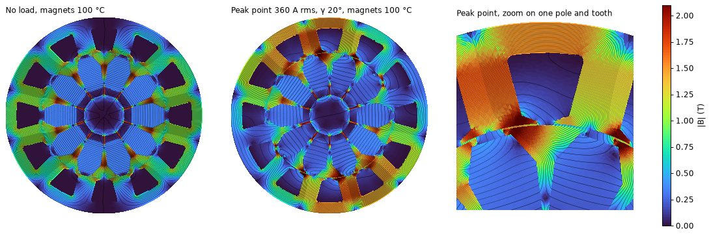
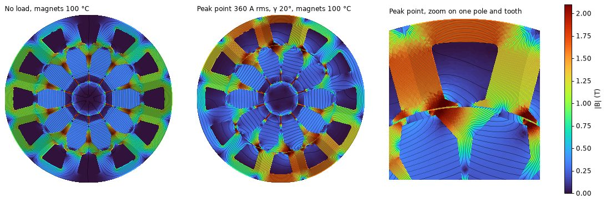
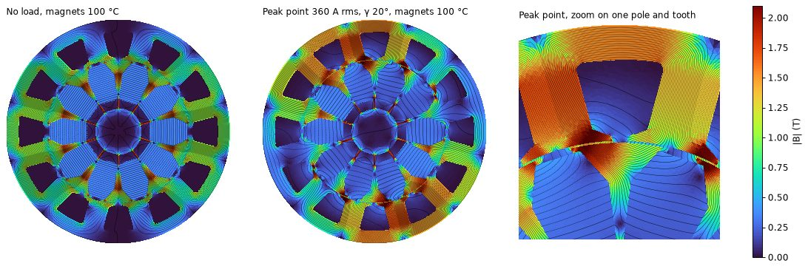
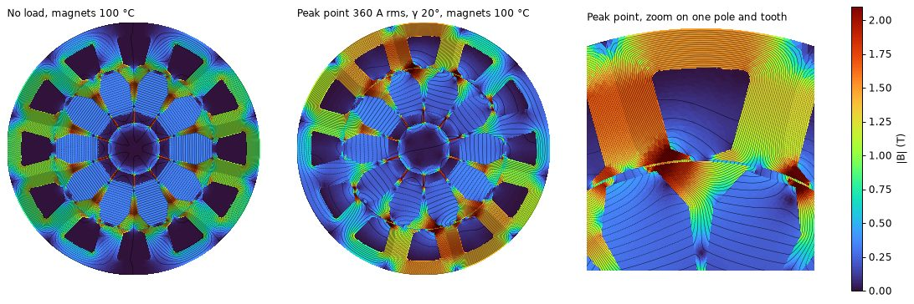
Spoke V2 · aluminium winding
Trade-offs
Three things pull against each other: peak-point efficiency wants a longer stack, drive-cycle range wants a short stack (less iron at light load), and mass and cost want both small. A larger OD relieves all three at once.
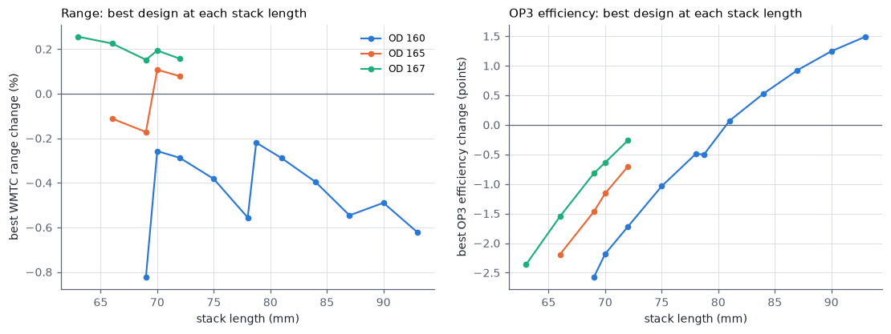
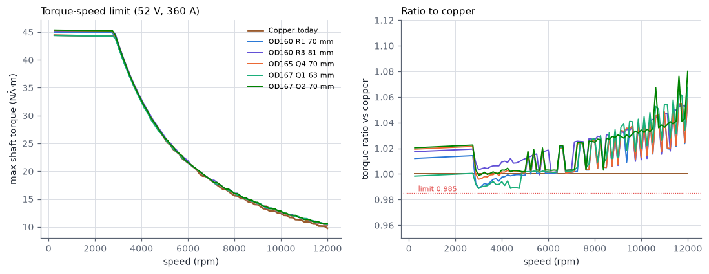
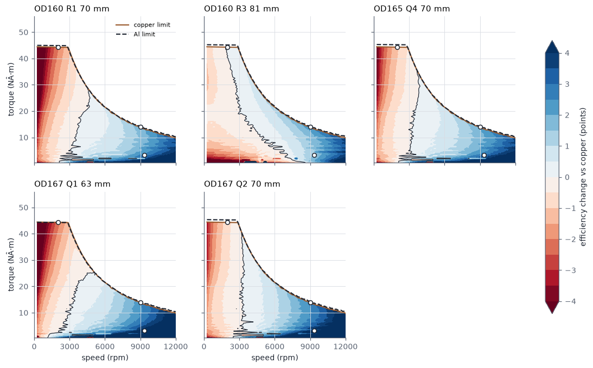
| Choice | Gain | Cost |
|---|---|---|
| OD 160 → 167 mm | +28 % slot area at the same tooth and stack; 63 mm stack becomes possible | +0.4 kg stator steel at the same length, larger housing |
| Stack +3 mm | OP3 efficiency +0.3 to +0.4 points | +0.3 kg, +$2.5, range −0.1 to −0.2 % |
| 10 → 9 turns per coil | Lower demagnetising field at 360 A, more current headroom | Needs about 11 % longer stack for the same torque |
| M235-35A → 0.20 mm steel | Eddy-current iron loss falls to about one third; range +1.4 to +1.5 % | +$32 to +$41 per motor at the assumed $4.0/kg |
| Rotor inset 1.5 / opening 8.0 + slot opening 4.0 | Torque +0.5 to +0.9 %, OP2 ripple 87 → 20 %, THD 5.3 → 4.5 % | Demag margin slightly lower (1.2 vs 0.9 % area below 0.1 T) |
| 3° three-step rotor skew | Ripple below 10 % everywhere, THD 3.6 % | Torque −0.3 %, segmented rotor assembly |
Spoke V2 · aluminium winding
Flux maps
All 17 geometries are solved.
Every geometry is solved at no load and at the 2000 rpm peak point (360 A rms at 20° current angle, magnets 100 °C), with the rotor at 0°. Colour = |B|, black lines = flux lines. The right panel zooms on one pole and tooth at the peak point.
Spoke V2 · aluminium winding
Demagnetisation
Ferrite loses coercivity in the cold, so the worst case is a cold start with full current on the −d axis (field weakening or a fault). Every geometry was checked at −20 °C, 360 A rms, two rotor positions.
| Geometry | −d axis: B at 1 % of magnet area (T) | −d axis: area below 0.1 T (%) | −d axis: area below 0 T (%) | −d axis: most negative H (kA/m) | Peak point: B at 1 % area (T) | Peak point: area below 0.1 T (%) |
|---|---|---|---|---|---|---|
| S0 | 0.103 | 0.97 | 0.23 | −717 | 0.120 | 0.80 |
| S1 | 0.102 | 0.98 | 0.23 | −717 | 0.120 | 0.80 |
| S2 | 0.102 | 0.97 | 0.22 | −713 | 0.120 | 0.79 |
| S3 | 0.103 | 0.94 | 0.21 | −712 | 0.121 | 0.78 |
| S4 | 0.102 | 0.97 | 0.22 | −712 | 0.121 | 0.77 |
| P1 | 0.103 | 0.95 | 0.23 | −713 | 0.119 | 0.80 |
| P2 | 0.103 | 0.95 | 0.23 | −713 | 0.118 | 0.80 |
| P3 | 0.104 | 0.96 | 0.23 | −715 | 0.119 | 0.79 |
| P4 | 0.104 | 0.94 | 0.23 | −711 | 0.120 | 0.78 |
| Q1 | 0.087 | 1.20 | 0.32 | −811 | 0.108 | 0.89 |
| Q2 | 0.085 | 1.27 | 0.36 | −829 | 0.109 | 0.88 |
| Q3 | 0.087 | 1.24 | 0.30 | −824 | 0.105 | 0.90 |
| Q4 | 0.088 | 1.23 | 0.32 | −811 | 0.107 | 0.92 |
| R1 | 0.087 | 1.25 | 0.31 | −810 | 0.108 | 0.92 |
| R2 | 0.088 | 1.25 | 0.32 | −811 | 0.110 | 0.90 |
| R3 | 0.088 | 1.24 | 0.32 | −808 | 0.109 | 0.90 |
| R0 | 0.087 | 1.26 | 0.31 | −811 | 0.106 | 0.92 |
Magnets at −20 °C (Br 0.427 T), 360 A rms with the copper ampere-turns (10 turns/coil). Worst of rotor positions 0° and 3°. Most negative H sits in single corner elements and is mesh-dependent; compare designs on the area measures.
- The copper geometry already has 0.9–1.0 % of the magnet area below 0.1 T in this case, at the magnet corners next to the air gap.
- Moving the magnet 0.5 mm closer to the gap (inset 1.5) raises this to 1.1–1.3 %. The stator OD and slot shape barely change it.
- The values use 10 turns per coil. Designs with 9 or 8 turns per coil carry 90 % or 80 % of this field at 360 A, so their margin is better than copper's.
- Confirm in Motor-CAD with the DM4654 cold Hcj curve before release. If the margin is not enough, keep the copper inset of 2.0 mm: this gives back about 0.3 % torque.
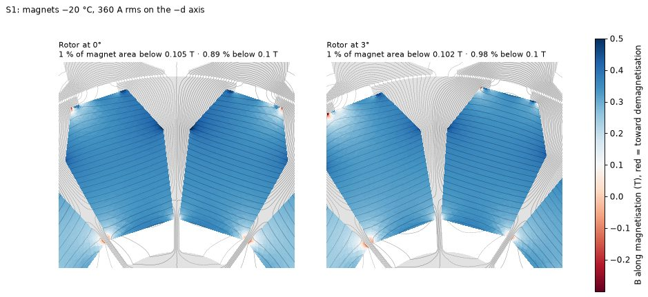
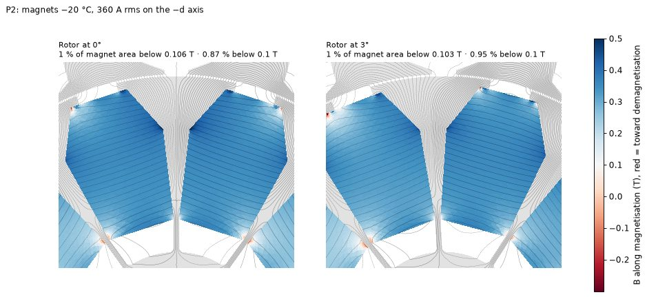
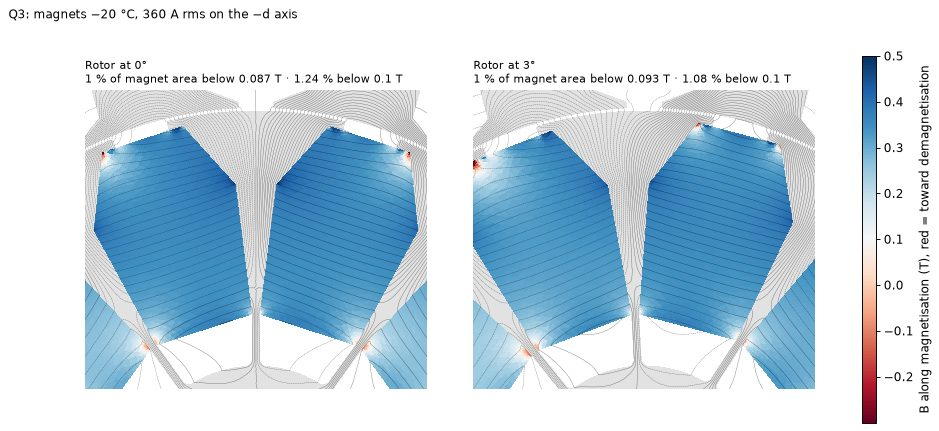
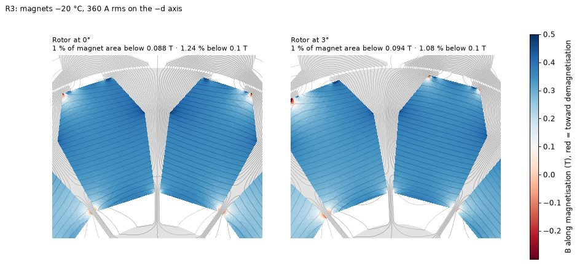
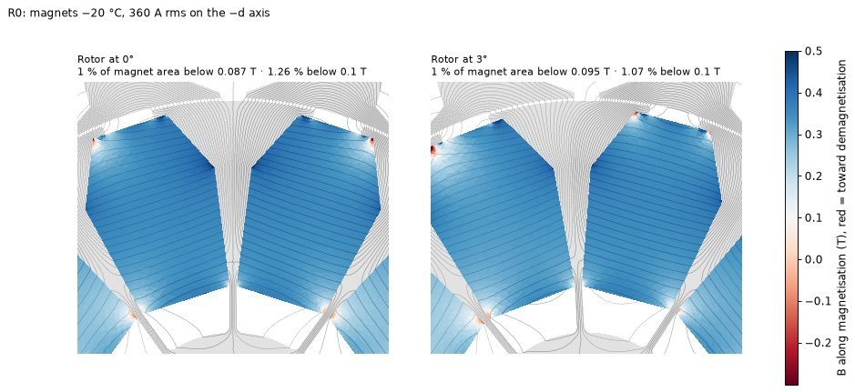
Spoke V2 · aluminium winding
Ripple and THD
| Geometry | T at 360 A N·m | Best γ °el | THD % | Ripple OP1 % | Ripple OP2 % | Ripple OP3 % | THD 3° skew | OP1 3° skew | OP2 3° skew | OP3 3° skew | Torque factor |
|---|---|---|---|---|---|---|---|---|---|---|---|
| Copper geometry (S0) | 45.73 | 19.0 | 5.31 | 16.1 | 86.7 | 5.1 | 3.86 | 11.4 | 54.5 | 3.9 | 0.997 |
| Q1 OD167 | 45.87 | 19.9 | 4.55 | 14.4 | 20.1 | 5.6 | 3.65 | 7.7 | 3.2 | 3.5 | 0.997 |
| Q2 OD167 | 46.01 | 20.4 | 4.57 | 15.7 | 21.2 | 6.7 | 3.71 | 8.2 | 3.3 | 4.3 | 0.997 |
| R0 OD160 | 46.20 | 19.6 | 4.55 | 14.6 | 20.9 | 5.4 | 3.64 | 7.9 | 3.6 | 3.4 | 0.997 |
| R1 OD160 | 45.63 | 20.1 | 4.50 | 14.5 | 20.3 | 5.6 | 3.60 | 7.8 | 3.4 | 3.6 | 0.997 |
FEMM at 63 mm with the copper path currents (10 turns/coil). Ripple is peak-to-peak / mean over one 12° slot pitch. 3° skew = three axial rotor segments stepped 0 / 1.5 / 3° mechanical. Limits: THD < 5 %, ripple < 10 %.
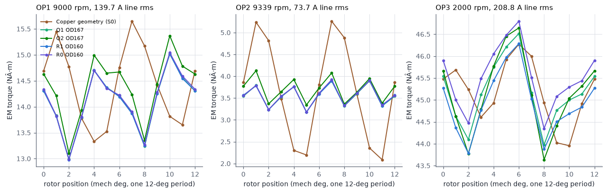
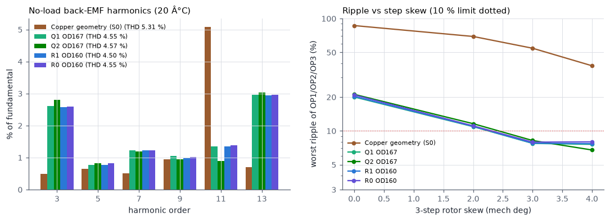
All aluminium geometries with the rotor change have THD below 5 % without skew. Ripple below 10 % at every point needs a 3° three-step skew; copper needs the same and stays at 54 % at OP2 even with it, because its OP2 ripple starts from 87 %.
Spoke V2 · aluminium winding
Drive cycle
Vehicle: gross mass 757 kg, CdA 1.117 m², wheel radius 0.30 m, gear ratio 13.9 (given). Assumed: rolling resistance 0.015, gear efficiency 0.95, rotating-mass factor 1.05, regen down to −26.4 N·m (largest regen torque in the log). Energy is counted at the motor terminals, motoring and regen, on a flat road.
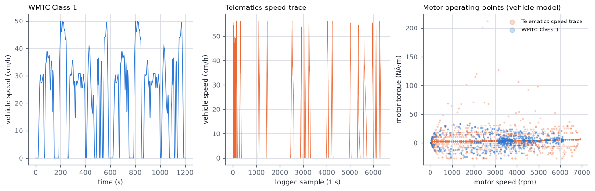
| Design | Telematics Wh/km | WMTC Class 1 Wh/km | Range telematics | Range WMTC |
|---|---|---|---|---|
| Copper today | 61.47 | 60.91 | +0.00 % | +0.00 % |
| OD160 R1 70 mm | 61.51 | 61.07 | −0.07 % | −0.26 % |
| OD160 R3 81 mm | 61.77 | 61.36 | −0.49 % | −0.73 % |
| OD165 Q4 70 mm | 61.32 | 60.85 | +0.24 % | +0.11 % |
| OD167 Q1 63 mm | 61.15 | 60.76 | +0.52 % | +0.26 % |
| OD167 Q2 70 mm | 61.22 | 60.79 | +0.41 % | +0.19 % |
Telematics trace: 10.75 km over 6363 one-second steps (30 logging gaps skipped). WMTC Class 1: 7.67 km. The logged motor torque is negative even at cruise, so energy is computed from the speed trace through the vehicle model. Speed steps in the log create short acceleration spikes; those points are held at the motor torque limit.
Both cycles spend most of their time below 15 N·m, where iron loss dominates. That is why thin steel and a short stack decide the range, and why higher OP3 copper loss hardly shows.
Spoke V2 · aluminium winding
Cost-benefit
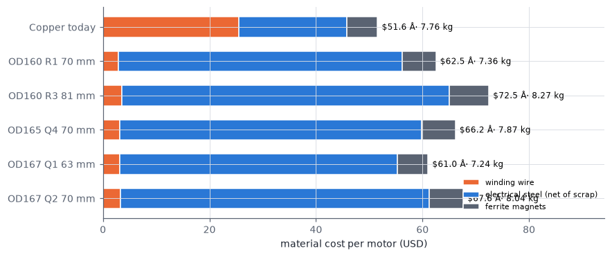
| Design | Wire $ | Steel $ | Magnets $ | Total $ | vs copper $ | Mass kg | vs copper kg | Range WMTC |
|---|---|---|---|---|---|---|---|---|
| Copper today | 25.53 | 20.32 | 5.72 | 51.57 | +0.00 | 7.76 | +0.00 | +0.00 % |
| OD160 R1 70 mm | 2.87 | 53.27 | 6.36 | 62.50 | +10.93 | 7.36 | −0.40 | −0.26 % |
| OD160 R3 81 mm | 3.54 | 61.56 | 7.36 | 72.46 | +20.89 | 8.27 | +0.51 | −0.73 % |
| OD165 Q4 70 mm | 3.19 | 56.61 | 6.36 | 66.16 | +14.59 | 7.87 | +0.11 | +0.11 % |
| OD167 Q1 63 mm | 3.16 | 52.16 | 5.72 | 61.04 | +9.47 | 7.24 | −0.51 | +0.26 % |
| OD167 Q2 70 mm | 3.31 | 57.96 | 6.36 | 67.63 | +16.06 | 8.04 | +0.28 | +0.19 % |
Price assumptions
| Item | USD/kg | Note |
|---|---|---|
| Copper magnet wire | 16.5 | Includes 5 % wire waste |
| Aluminium magnet wire | 5.5 | Includes 5 % wire waste |
| M235-35A | 1.8 | |
| 0.20 mm steel (NO20 class) | 4.0 | Estimate; the largest uncertainty |
| Ferrite magnet | 4.0 | |
| Steel scrap credit | 0.3 | Square blank = stator OD + 4 mm |
- Aluminium saves $22–23 of wire per motor. The 0.20 mm steel adds $32–41 (more steel for the larger OD or longer stack). Net: +$9 to +$21.
- With M235-35A, aluminium designs that meet the torque and OP1/OP2 loss limits cost $32–35, about $16–20 less than copper, but lose 1.3–2.2 % range (P2 66 mm: 7.56 kg, $32.4, range −1.4 %).
- Each 1 % of range is worth about 0.6 Wh/km. Whether $20 per motor beats 1–2 % range depends on the battery cost per kWh, which was not given.
Spoke V2 · aluminium winding
Structure
The spoke rotor has no bridge at the air gap: each pole piece and its magnet hang on the web between the magnet pockets near the shaft. The web stress scales with the centrifugal load of everything outside the web root, so the screen compares Σ ρ·A·r of the pole steel and magnets (per unit length) against the copper rotor.
| Rotor change | Web load vs copper | Magnet area mm² | Pole steel area mm² |
|---|---|---|---|
| Copper rotor (as built) | 0.00 % | 4731.9 | 2294.4 |
| Magnet inset 1.5 | −0.28 % | 4761.2 | 2237.7 |
| Magnet opening 7.5 | +0.45 % | 4731.9 | 2313.3 |
| Inset 1.5 + opening 7.5 | +0.04 % | 4761.2 | 2251.1 |
| Inset 1.5 + opening 8.0 (used) | −0.12 % | 4761.2 | 2244.3 |
- Unchanged: shaft 25 mm, web thickness 1.0 mm, web offset 4.0 mm, magnet depth 28 mm, magnet cross-section 18 × 10.5 mm block geometry.
- A longer stack does not change the stress: load and web section both scale with length. It does lengthen the shaft span, so check the first bending mode for the 70–81 mm options.
- Longer stator teeth (21 mm slot at OD 167): check tooth bending modes for NVH and the tooth-to-housing heat path.
- Aluminium conductors: plan crimp or weld terminations rated for aluminium, and keep the enamel grade and impregnation of the copper design.
Spoke V2 · aluminium winding
Run log and limits
Model limits
- 2D FEA: end effects are only in the end-turn resistance and the end-winding inductance of the model.
- Aluminium wire fill is held at the copper design's 0.5175 insulated fill. A real aluminium winding may reach a different fill.
- Efficiency values are from the tuned model; differences between designs are more reliable than the absolute values.
- Thermal behaviour was not simulated. The OP3 loss rise of the 63–70 mm designs (+25 % at 44 N·m) needs a Motor-CAD thermal check of the peak duration.
- Ripple, THD and demagnetisation use the copper ampere-turns (10 turns/coil, 63 mm). Designs with fewer turns and a longer stack are expected to behave alike per unit length.
Run interruptions
On 16 Oct 2026 at 07:15 and 07:20, Windows Update restarted the computer for planned updates (active hours were 11:00–05:00). All FEMM runs stopped. Every solve is saved as it finishes, so no results were lost and the runs resumed. The scripts were then hardened: they keep the computer awake while running, write result files atomically, restart FEMM and retry a solve after a FEMM crash, and close their own FEMM windows when done.
Files
| File | Content |
|---|---|
| alu_femm.json | FEMM grids of the 17 geometries |
| alu_sweep_v2.json | Phase-2 winding sweep (2,592 designs) |
| alu_v2_eval.json, alu_od160_eval.json | Drive cycle, cost and current density of the candidates |
| alu_verify.json | FEMM peak torque, THD, ripple and skew |
| report_full/maps_stats.json | Demagnetisation statistics of all geometries |
| alu_tradeoff_summary.csv | Key designs in one table |
| work/maps/*.ans | FEMM solutions behind the flux and demagnetisation maps |